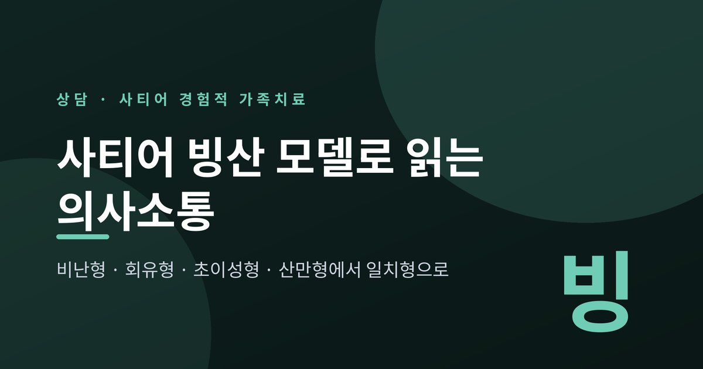
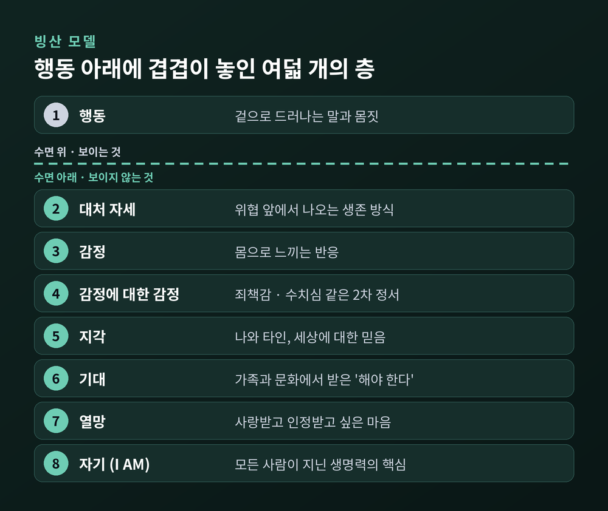
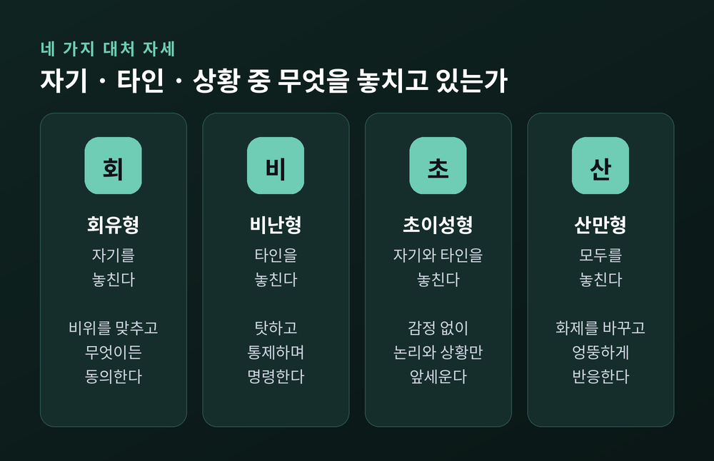
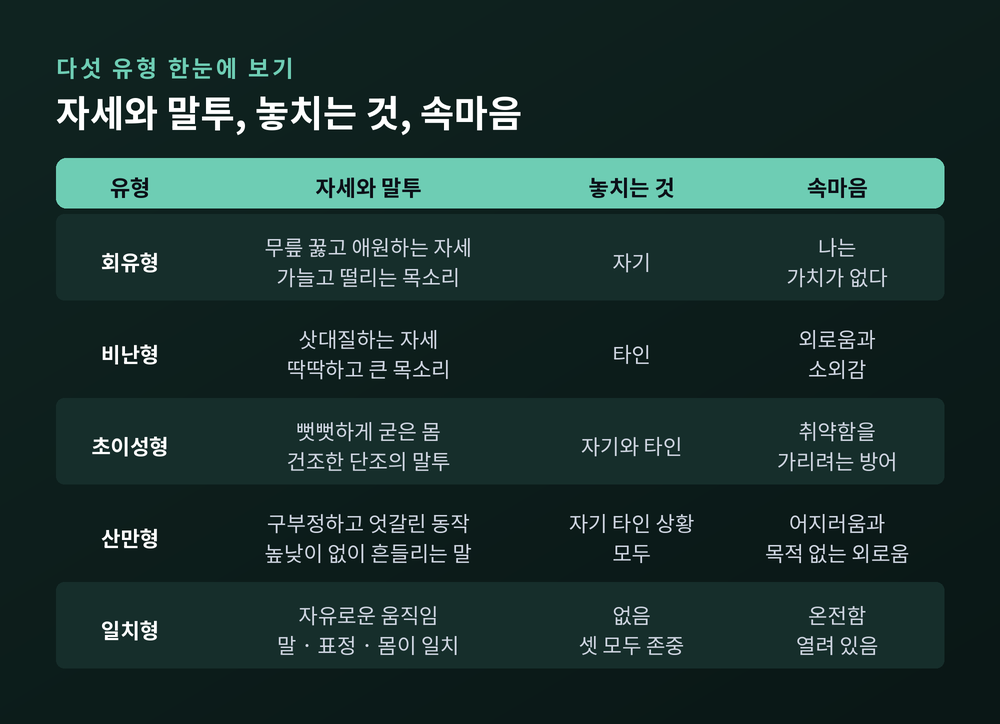
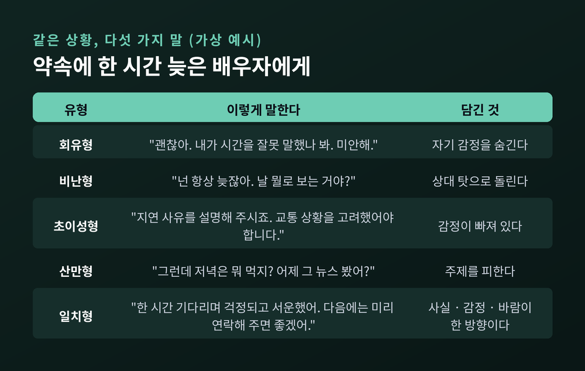
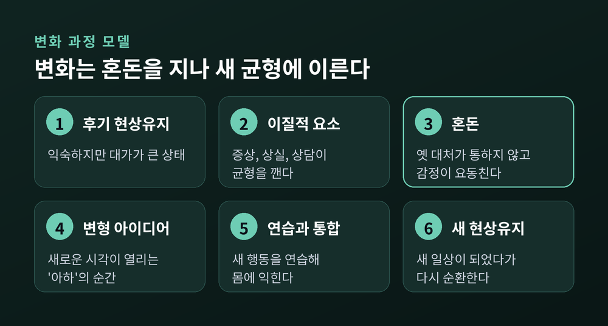
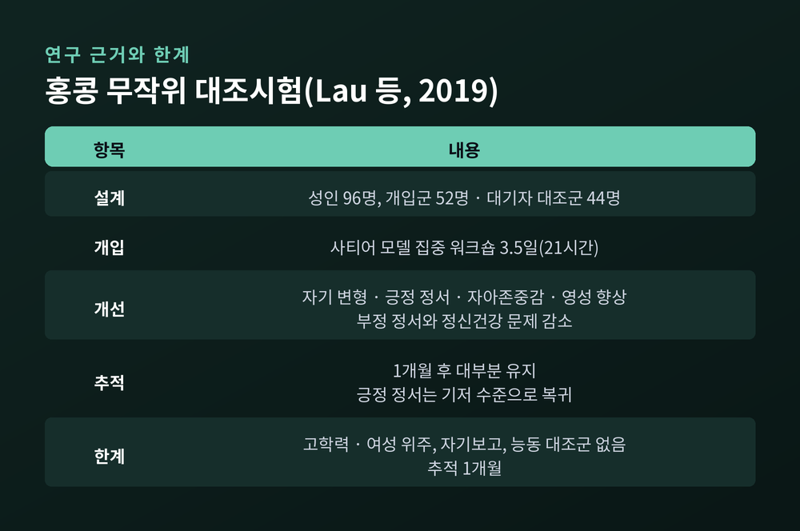

빙산 모델의 여덟 층, 네 가지 대처 자세, 일치형 의사소통과 연구 근거

세 줄 요약
이번 글에서는 사티어 경험적 가족치료의 핵심인 빙산 모델과 네 가지 대처 자세, 그리고 일치형 의사소통으로 가는 과정을 정리해 보겠습니다. 이론의 구조를 먼저 살피고, 같은 상황에서 유형별로 말이 어떻게 달라지는지 예시로 확인합니다. 마지막에는 연구가 보여 주는 것과 보여 주지 못하는 것을 함께 짚습니다.
버지니아 사티어(1916~1988)는 가족치료의 개척자로 꼽히는 미국의 치료자입니다. 1951년 첫 가족치료 세션을 열었고, 1959년 캘리포니아 팰러앨토의 정신연구소(MRI) 설립에 참여했습니다. 『Conjoint Family Therapy』(1964), 『Peoplemaking』(1972) 같은 저서로 가족 안의 소통을 널리 알렸습니다.
사티어 모델이 '경험적'이라 불리는 이유가 있습니다. 통찰을 말로 설명하는 데서 그치지 않고, 몸과 감정으로 직접 겪게 해야 깊은 변화(2차 변화)가 온다고 보기 때문입니다.
이 모델을 관통하는 문장은 둘입니다. "변화는 가능하다. 외부를 바꿀 수 없어도 내면은 바꿀 수 있다." 그리고 "문제가 문제가 아니다. 대처가 문제다." 가족이 겪는 갈등 그 자체보다, 그 갈등에 각자가 어떻게 대처하느냐를 들여다본다는 뜻입니다.
치료의 목표는 네 가지 메타 목표로 정리됩니다. 자아존중감 높이기, 스스로 선택하는 사람 되기, 책임지기, 일치형 되기입니다.
사티어는 한 사람의 내면을 빙산에 비유했습니다. 물 위로 드러난 것은 행동뿐이고, 그 아래에 감정과 생각, 바람이 겹겹이 있다는 그림입니다.

층의 구분은 자료마다 조금 다릅니다. 행동·감정·지각·기대·열망·자기의 여섯 층으로 설명하는 자료가 있고, 여기에 '대처 자세'와 '감정에 대한 감정'을 따로 세어 여덟 층으로 설명하는 자료도 있습니다. 이 글은 여덟 층으로 설명하겠습니다.
위에서부터 살펴보면 이렇습니다. 행동은 겉으로 보이는 말과 몸짓이고, 대처 자세는 위협을 느낄 때 나오는 생존 방식입니다. 감정은 몸으로 느끼는 반응입니다. 감정에 대한 감정은 "화가 난 나 자신이 부끄럽다"처럼 감정 위에 얹히는 죄책감·수치심 같은 2차 정서입니다.
지각은 나와 타인, 세상에 대한 믿음입니다. 기대는 과거 경험과 문화, 가족에게서 받은 '~해야 한다'입니다. 열망은 사랑하고 사랑받고 싶은 마음, 인정과 수용에 대한 갈망입니다. 가장 아래의 자기('나는 존재한다', I AM)는 모든 사람이 지닌 생명력의 핵심으로 설명됩니다.
한 자료는 위쪽 다섯 층을 '하기(Doing)', 아래 두 층을 '존재(Being)'로 나눕니다. 행동을 고치라고 다그치기보다, 행동 아래의 열망과 존재에 닿게 돕는다는 발상입니다. 치료자는 이 층들을 따라 내려가는 '잠수부'에 비유됩니다. 층들은 서로 영향을 주기 때문에 한 층이 달라지면 다른 층도 따라 움직이는 경향이 있다고 합니다.
사티어는 사람이 위협을 느끼고 자기 가치가 흔들릴 때 네 가지 자세로 반응한다고 보았습니다. 회유형, 비난형, 초이성형, 산만형입니다. 한국 교재에서는 여기에 이상적 유형인 일치형을 더해 다섯 가지 유형으로 가르칩니다.

기준은 단순합니다. 자기, 타인, 상황 가운데 무엇을 놓치고 있느냐입니다.
회유형은 자기를 무시합니다. 상대의 비위를 맞추고 무엇이든 동의하며, 속으로는 "나는 가치 없다"고 느낍니다. 사티어는 이 자세를 한쪽 무릎을 꿇고 손을 내미는 모습으로 묘사했고, 목소리는 가늘게 떨린다고 했습니다.
비난형은 타인을 무시합니다. "넌 항상 그래", "도대체 뭐가 문제야"처럼 삿대질하듯 말합니다. 목소리는 딱딱하고 크며, 몸은 긴장합니다. 큰소리 뒤에는 외로움과 소외감이 숨어 있다고 설명됩니다.
초이성형은 자기와 타인을 모두 무시하고 상황과 논리만 앞세웁니다. 감정이 비어 있는 건조한 말투, 추상적인 단어가 특징입니다. 침착해 보이지만 취약함을 가리는 방어라고 설명합니다.
산만형은 자기, 타인, 상황을 모두 놓칩니다. 화제를 불쑥 바꾸고 엉뚱한 반응을 하며, 마음속에는 어지러움과 목적 없는 외로움이 있다고 합니다. 한국 자료는 이를 가장 다루기 어려운 유형으로 소개합니다.
네 유형의 공통점이 중요합니다. 모두 낮은 자아존중감에서 나온 생존 전략입니다. 비난형은 강해 보이지만, 사티어는 그 밑에도 흔들리는 자기 가치감이 있다고 보았습니다.

예전에는 이런 유형 분류를 '성격 유형'으로 오해하기 쉬웠습니다. 지금은 고정된 성격이 아니라, 위협 앞에서 꺼내 드는 습관적 반응으로 이해합니다.
다음은 이해를 돕기 위해 제가 만든 가상의 예시입니다. 약속 시간에 한 시간 늦은 배우자에게 하는 말이라고 가정해 보겠습니다.

일치형의 말에는 구조가 있습니다. 사실(한 시간 기다렸다), 감정(걱정되고 서운했다), 바람(다음에는 미리 알려 주면 좋겠다)이 한 방향으로 나란히 갑니다. 사티어는 일치형 메시지를 "메시지의 모든 부분이 같은 방향으로 간다"고 표현했습니다. 말, 목소리, 표정, 몸의 신호가 어긋나지 않는다는 뜻입니다.
한 가지 짚어 둡니다. 일치형은 늘 부드럽게 말하는 사람이 아닙니다. 필요하면 단호하고 거칠게도 말하지만, 그 안의 감정과 표현이 같습니다. 일치형이 되려면 거절당하거나 비판받거나 부족해 보일 두려움을 넘는 용기가 필요하다는 해설도 있습니다. 또한 매번 일치형만 고집하기보다, 각 자세의 결과를 알고 선택하는 힘을 기르는 것이 목표로 설명됩니다.
사티어는 변화가 직선이 아니라고 보았습니다. 변화 과정 모델은 여섯 단계로 소개되는 일이 많습니다. 다만 단계 수와 이름은 자료마다 다릅니다.

익숙하지만 대가가 큰 '후기 현상유지'에서 출발합니다. 증상, 상실, 혹은 상담 자체 같은 '이질적 요소'가 들어오면 균형이 깨집니다. 이어서 '혼돈'이 옵니다. 옛 대처가 통하지 않고 감정이 오르내리는 시기이며, 한 자료는 이를 "52장 카드 줍기"에 비유합니다. 많은 변화 시도가 실패하는 지점이기도 합니다.
혼돈의 목적은 '변형 아이디어'를 얻는 것이라고 합니다. 새로운 시각이 생기면 새 행동을 연습하고 몸에 익혀 '새로운 현상유지'에 이릅니다. 새로움이 옅어지면 이 상태도 다시 익숙한 일상이 되어 순환한다고 합니다.
상담에서는 이 과정이 구체적인 기법으로 구현됩니다. 가족 조각은 관계의 거리와 자세를 몸으로 세워 패턴을 눈에 보이게 합니다. 가족 재구성은 심리극 형식으로 가족 경험을 다시 살펴봅니다. 온도 읽기는 정해진 틀에 따라 서로의 이야기를 나누는 구조화된 소통 도구입니다.
근거를 살펴보면 아직 조심스러운 수준입니다. 홍콩에서 이뤄진 무작위 대조시험(Lau 등, 2019)이 대표적입니다. 성인 96명을 개입군 52명과 대기자 대조군으로 나누고, 3.5일 21시간의 사티어 모델 집중 워크숍을 진행했습니다. 워크숍은 대처 자세, 빙산과 일치 의사소통 연습, 가족 재구성으로 구성되었습니다.

사후 측정에서 자기 변형, 긍정 정서, 자아존중감, 영성이 향상되었고 부정 정서와 정신건강 문제는 줄었습니다. 대부분의 효과는 1개월 추적에서도 유지되었으나, 긍정 정서는 기저 수준으로 돌아왔습니다.
한계도 분명합니다. 참가자가 고학력·여성 위주였고, 자기보고 설문에만 의존했으며, 능동적 대조군이 없었고, 추적 기간이 한 달에 그쳤습니다. 다른 자료들은 사티어 모델이 임상 관찰에 크게 기대고 있고 경험적 연구는 제한적이라고 밝힙니다. 사티어 모델이 다른 가족치료보다 낫다고 입증한 대규모 비교 연구는 이번 조사에서 확인하지 못했습니다.
빙산 은유에 대해서도 유보적 평가가 있습니다. 상담에 도움이 된다는 이야기는 많지만 그림 자체에는 의문을 표한 학자도 있습니다. 이 글은 사티어 모델을 '검증이 끝난 치료법'이 아니라, 소통을 이해하는 유용한 틀로 소개한 것입니다.
이 글은 일반적인 정보이지, 진단이나 치료를 대신하지 않습니다. 가족 안의 갈등이 반복되고 일상이 힘들어진다면, 혼자 해결하려 하지 마시고 가족상담·심리상담 전문가를 찾아 상의하시길 권합니다. 유형을 스스로 '진단'하는 일도 조심하시기 바랍니다. 이 분류는 상대를 낙인찍는 용도가 아니라, 나의 반응을 알아차리는 출발점입니다. 위기 상황이라면 지체 말고 전문가나 가까운 사람에게 도움을 요청하셔야 합니다.
끝으로 한 마디만 더 드리겠습니다. 가족과의 대화에서 가장 먼저 바꿀 수 있는 것은 상대의 말이 아니라 나의 자세입니다.
"문제가 아니라 대처가 문제다." 사티어의 이 한 문장이 빙산 모델 전체를 요약합니다.
오늘 가족과 말다툼이 났다면, 내 몸은 어떤 자세를 하고 있었을까요. 그것을 알아차리는 데서 일치형으로 가는 길이 시작될 것입니다.